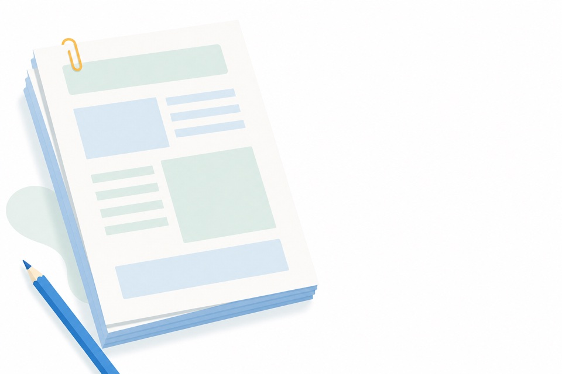
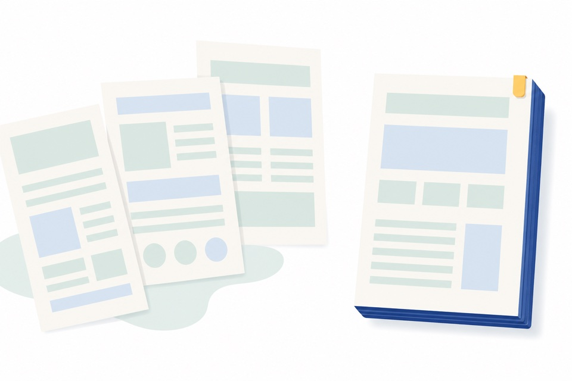
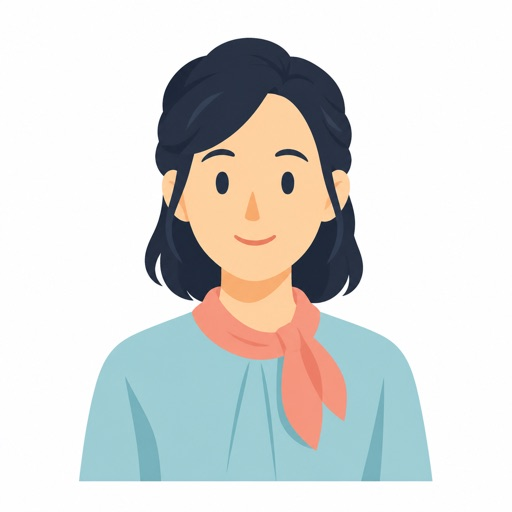
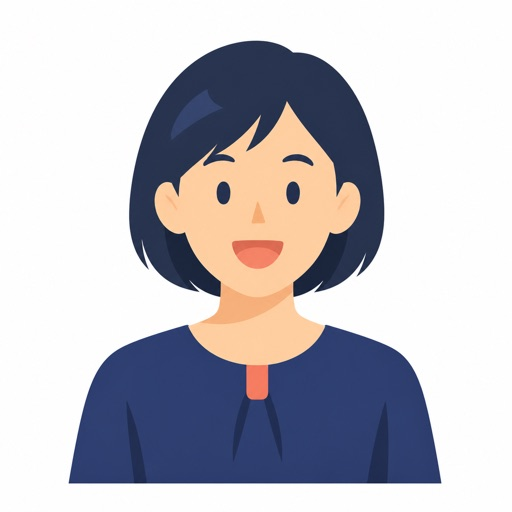

校種を越えて、同じテーブルにつく
小・中・高・高専・大学——普段は交わらない校種の先生と同じテーブルで、「うちの学校ではこうしている」とアイデアを出し合います。一番大事なのは"人"のつながり。その上で、生成AIの活用も自然に話せます。ふだんの職場では出会えない先生とつながる、この越境がEDUCROSSの本体です。
昨年度は小・中・高校・高専・大学教員が集結
講師は現役の担任・コーディネーター etc...
机上の空論ではなく、本当に役立つ話を。
01
ゆとりをもって、
人を育てる社会へ。
教師の心にゆとりをつくる方法は、ひとつではありません。趣味、飲み会、授業づくり、自分のアップデート。人から、旅から、本から——私たちはいつも、何かから学んでいます。
SNSで発信する先生が増えました。私自身、ネットからたくさんのことを学んできました。それでも、直接顔を合わせて交流すること以上の刺激には、まだ出会ったことがありません。
北九州を中心に活躍する先生たちと、学校現場に「新しいことを学ぶ余白」を取り戻すこと。本当に楽しい授業を、一緒に考えていくこと。そのための機会として、EDUCROSSをつくりました。
明日の授業が、また楽しみになる。そのキッカケが、ここで生まれたらうれしいです。

EDUCROSS in 北九州実行委員会
代表 外﨑 顯博小学校教員飯塚市立菰田小学校
02
気づけば隣の席の先生と仲間になるような会にしていきたいと思っています。
小・中・高・高専・大学——普段は交わらない校種の先生と同じテーブルで、「うちの学校ではこうしている」とアイデアを出し合います。一番大事なのは"人"のつながり。その上で、生成AIの活用も自然に話せます。ふだんの職場では出会えない先生とつながる、この越境がEDUCROSSの本体です。
生成AIを使ったアプリづくりや授業を、つくった本人が実演でシェア。「なぜそうしたか」「どこでつまずいたか」まで、現場でやっていることをそのまま話せます。名刺交換ではなく、現場の話で語り合うから、会のあとも続くつながりになります。
つくって終わりではなく、校内や地域でどう続けているか。同僚に無理をさせない推進の仕方、巻き込み方、続く仕組みのつくり方まで話せます。ひとりで頑張っている推進担当の先生にこそ。
生成AIは初めて、という先生こそ歓迎です。むずかしい事前準備は要りません。手ぶらでどうぞ。
03
午後まるごと、話して・見て・つながる4時間です。
まずは肩の力を抜いて。校種も世代もばらばらのテーブルで自己紹介から。
それぞれの実践紹介やお悩み相談、授業のコラボを計画。
振り返りと今後の予定の確認。
終了後は、希望者で懇親会へ。海鮮問屋 さかな市場 小倉魚町店（会費5,000円・予定）
04
参加された先生全員に。月曜からそのまま使えるものだけを選びました。

GIFT 01
代表・外﨑がつくっている無料教材ブランド「School Stock」。まだベータ版で、まとまった時間がとれる夏休みにブラッシュアップしていきます。「こんな教材がほしい」というアイデアをもらえたら、一緒につくっていきたいです。
School Stock を見る →
GIFT 02
プリントの束をひとつのPDFにまとめる、先生の定番作業がラクになる道具。インストール不要・登録不要。HTMLファイルをダウンロードするだけで、すぐ使えます。
ダウンロード →05
校種も世代もばらばらの先生たちが、こんな言葉を残してくれました。
校種が違うから、出てくる発想が新鮮でした。「その手があったか」の連続で。

特別支援教育の大切さを、改めて感じました。子どもの見え方が変わりました。
子育て世代の働き方について、見直すきっかけになりました。

とにかく楽しかった。校種を越えた仲間ができました。またやってほしいです！
※アンケート・懇親会でいただいた声をもとに構成しています。イラストはイメージです。
Beyond the day
EDUCROSSで生まれたつながりは、会場を出たあとも各地の学びの場へと広がっています。ここでの出会いが、次の一歩のキッカケになりました。
いろんなツールの使い手が屋台のように集う場へ。EDUCROSSのつながりが、ここに続きました。
イベントを見る →南山高校を会場に、九州各地のGEGが集合。校種も地域も越えた学び合いの場に。
イベントを見る →天草酒造を舞台に、熊本のGEGが主催。現場でやっていることを持ち寄って語り合いました。
イベントを見る →生成AIでアイデアを形にする一日。校種を越えた先生たちが一緒に手を動かしました。
イベントを見る →EDUCROSSに参加してくださったみなさんと、いろいろな場所で人がつながり、学び合う機会をつくってきました。
きっと、良い会になると思います。ぜひ、ご参加ください！
校種も世代も越えて、ひとつのテーブルで。
06
はじめての方も、うまく話せなくても大丈夫。参加するみなさんが安心して話せる場をつくります。
勧誘や販売はありません。安心してご参加ください。（各種教育イベントの告知は大歓迎！）
会のあとは、希望者で懇親会へ。語りの続きは小倉の魚と一緒に。海鮮問屋 さかな市場 小倉魚町店／会費5,000円（予定）
07
| テーマ | 「校種を越えてつながる、最初のキッカケ。」 生成AI×授業づくり×組織づくり |
|---|---|
| 開催日時 | 2026年8月1日（土）13:00 - 17:00 |
| 会場 | 生涯学習総合センター 北九州市小倉北区大門一丁目6番43号 |
| 対象 | 教育関係者（生成AIが初めての方も歓迎） |
| 定員 | 20名（先着順） |
| 参加費 | 500円（当日会場でお支払い） |
| おみやげ | 著作権を気にせず使えるプリント・素材集（School Stock）／PDF結合・編集ツール |
| 懇親会 | 終了後・希望者のみ／海鮮問屋 さかな市場 小倉魚町店／会費5,000円（予定） |
| 主催 | EDUCROSS in 北九州実行委員会（代表 外﨑 顯博） |
08
お申し込みは3ステップ。1分で完了します。
下のボタンから申し込みフォームにアクセスし、必要事項を入力してください。
お申し込み完了後、確認メールをお送りします。届かない場合はご連絡ください。
当日は受付でお名前をお伝えください。皆さまのご参加をお待ちしています！
申込締切：2026年7月31日（金）／定員に達し次第受付終了
09
大丈夫です。むしろ「これから使ってみたい」という先生にこそ来てほしい会です。実演を見て、つくった本人に「最初の一歩」を直接聞けるので、独学よりずっと近道です。
特別な準備は不要です。筆記用具と「聞いてみたいこと」だけお持ちください。名刺があれば交流に便利です。
可能です。ご都合の合う時間だけのご参加も歓迎します。受付でその旨お伝えください。
小学校から大学まで、さまざまな校種・分野の先生方や教育関係者が参加します。校種を越えた出会いがこのイベントの魅力です。
いいえ、懇親会は希望者のみの自由参加です（会費5,000円・予定）。本編だけのご参加ももちろん歓迎です。
キャンセルは可能です。定員制のため、参加が難しくなった場合はお早めにメールでご連絡いただけると助かります。
10
ご不明な点がございましたら、お気軽にお問い合わせください。
EdtechChikuho@gmail.com